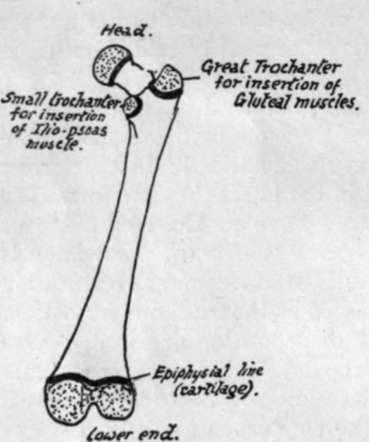
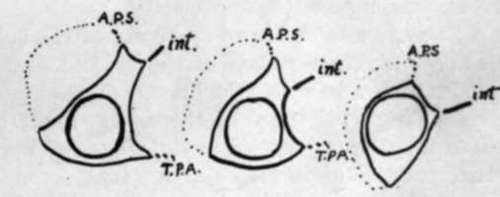

Preliminary. Part 3
Description
This section is from the book "The Anatomy Of The Human Skeleton", by J. Ernest Frazer. Also available from Amazon: The anatomy of the human skeleton.
Preliminary. Part 3
A knowledge of the " growing ends " is necessary for the surgeon who may have to deal with injuries affecting them, with subsequent premature junction with the shaft and, as a consequence, shortening and deformity of the bone concerned. The deformity, of course, would not be so great, although present, if the injury affected the epiphysis at the other end of the bone. The limb bones have their growing ends at the shoulder and wrist in the arm and forearm respectively, and at the knee ends of the bones in the lower limb. ^ The vascular supply of bones is obtained from the arteries in the neighbourhood : / in long bones many small vessels enter near the ends and in the epiphyses, and their tracks are seen as vascular foramina in the dried bone ; but the vessels also enter the shaft, and one or two larger vessels in particular make what are termed the nutrient foramina in the body of the bone. In long bones the direction of the nutrient foramen is in a direction away from the " growing end " of the bone : the reason for this disposition of the vessels is obscure. The larger vascular foramina are occupied by veins as a rule, and nerves and lymphatics accompany the vessels into the bone. The results of certain diseases and injuries of bones is explained by reference to the way in which their blood supply reaches them ; thus, whereas the stripping of the shaft of a long bone will result in necrosis of the exposed osseous tissue, the bones of the cranial vault may be laid quite bare without such result, because their blcod supply is almost wholly derived from the meningeal vessels on their deep surface.
Fig. 3. - Diagram of femur. The stippled areas represent the epiphyses which are formed from centres of ossification distinct from that of the main shaft; each of these epiphyses is separated from the shaft by a layer of cartilage, indicated by the thick black lines, and the adult consolidation of the bone is brought about by the ossification of these cartilaginous plates. Their presence is thus a sign of immaturity.
Before the student starts on the study of the details of the skeleton he should have some knowledge of the factors that are responsible, in each individual bone, for the appearance it presents in the adult state. The following considerations ought therefore to be understood, for on the comprehension and appreciation of their bearing on any particular bone will depend the student's ultimate grasp of the bone and its possible modifications : he must, moreover, bear in mind that a knowledge of bones and muscles and intermuscular planes is essential to a proper understanding of the anatomy of the body, that the planes of muscles cannot be properly grasped without study of the skeleton, that the bones are only incompletely studied without the muscles and soft parts in relation with them and attached to them, and that many of the smaller details of the structure of the body that puzzle the student can be solved at once by an intelligent appeal to the skeleton. The principal factors responsible for the appearance of the adult bones are most easily illustrated in the long bones of the limbs; but the student must remember that they are also operative in the other bones, and as his studies proceed he should endeavour to see how they have come into action in these other instances.
1. The shape and moulding of the surfaces of a bone depend on two main factors-(a) its primary " build " for performing certain functions and to resist certain strains, and (b) secondary moulding resulting from the arrangement and " pressure " of the surrounding structures. Thus in the fibula there is a strong bar of bone running throughout its length that is of a primary nature and remains in itself unaltered by the various structures attached to it, but it is covered in and partly hidden by secondary surfaces moulded over it and shaped by the covering muscles, and it can only be recognised here and there through some of these surfaces, making a convexity where there would otherwise be flatness or a concavity : again, in the lower jaw, we have the angled shape as a necessity of function, to bring the teeth into opposition, and combined with this as other primary constructions there are (see Fig. 210) the thick splenial portion to support the down-push of the alveolar part that carries the teeth, and the existence of a thick bar to counteract the tendency of the angle to open out ; while on these and not affecting them we find the secondary moulding shown, for example, in the presence of glandular fossae and a coronoid process. Or in the scapula a thick bar (see p. 70) extends from the lower angle to the glenoid process, and its relation to the axillary border varies individually in detail, because the border is a secondary one which varies with the development of the Subscapularis that makes it, whereas the bony bar is quite unaffected by the muscles that lie over it. Considerations such as these will enable the student who endeavours to understand their bearing to comprehend the meaning of the existence and appearance of the various surfaces seen on a bone, to appreciate the way the bone lies in relation to surrounding structures, and to think of its different parts in terms of these as they exist in the living body.
Fig. 4.-Schematic sections through the fibula at various levels from above down, to show how the primary cylindrical bar of the bone is overlaid and hidden by the mouldings due to the muscles applied to it. The dotted line covers the Peroneir A.P.S. is the anterior peroneal septum, int. the interosseous membrane, and T.P.A. is the aponeurosis covering Tibialis posticus.
2. In addition to the secondary mouldings just mentioned there are secondary markings to be distinguished on bones. These are made by ossification spreading a little way into the attachment of fibrous tissue to the periosteum, and become evident after birth, as a rule about puberty. They indicate fibrous attachment only, be it liga -ment, tendon, aponeurosis, or fascia, and are never made as a result of attachment of purely muscular fibre. They are manifestly surface elevations or markings and easily distinguished from primary ridges in the bone. An excellent example is seen in the oblique or vertical line on the tibia or the deltoid impression on the humerus. Sometimes the secondary marking is placed on a primary ridge, as in the linea aspera of the femur : at birth there is only the primary posterior border visible on the shaft, into which the aponeuroses are inserted, but later the bony growth invades these fibrous structures and thus the secondary linea aspera is added to the primary posterior border. Secondary markings are not always so apparent, and in some cases may be hardly visible, but they can always be felt by the finger, and it is a good thing for the student to acquire the habit of examining all bony surfaces with the finger, which, with a little training, will be found more useful than the eye for certain purposes.
Continue to: